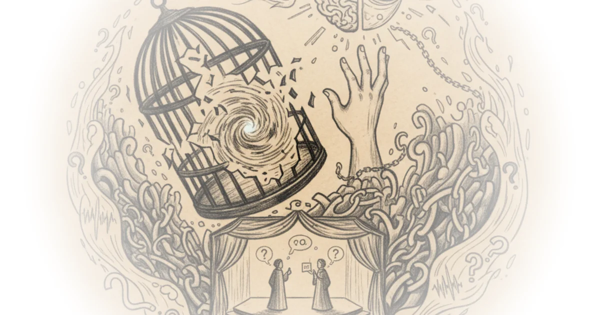

Atheist Slogans You Should Stop Using Alex O'Connor · Cosmic Skeptic ·Feb 8, 2026 · 178 min read · Philosophy 
Kandinsky on the Spiritual Element in Art and the Three Responsibilities of Artists Maria Popova · The Marginalian ·Feb 5, 2026 · 19 min read · Culture
Notes on Complexity: A Buddhist Scientist on the Murmuration of Being Maria Popova · The Marginalian ·Feb 1, 2026 · 10 min read · Culture
The Machine God's Existence Would Insist Upon Itself, Wouldn't It? Freddie deBoer · ·Feb 1, 2026 · 10 min read
What Fantasy Gets Wrong About Sacred Groves Andrew Henry · Religion For Breakfast ·Jan 29, 2026 · 24 min read · History
Legality of Protesting ICE at Church Devin Stone · LegalEagle ·Jan 28, 2026 · 23 min read · Law & Rights
Why Utah is Digging Up a $2.4BN Mega-Temple Fred Mills · The B1M ·Jan 22, 2026 · 13 min read · Housing & Cities
Do We Exist in the Mind of God? - David Bentley Hart Alex O'Connor · Cosmic Skeptic ·Jan 18, 2026 · 92 min read · Philosophy
The Gen Z “Religious Revival” Isn’t Real Andrew Henry · Religion For Breakfast ·Jan 15, 2026 · 11 min read · Culture
Unicef: Over 100 children killed in Gaza since “ceasefire”; Mass funeral in Iran; ICE arrests… Ryan Grim & Jeremy Scahill · Drop Site ·Jan 14, 2026 · 17 min read · Foreign Policy
Was Nero the Antichrist? (and why early Christians thought he’d rise again) Andrew Henry · Religion For Breakfast ·Jan 13, 2026 · 23 min read · History
We Need to Save Christianity From Christians - Rhett McLaughlin Alex O'Connor · Cosmic Skeptic ·Jan 11, 2026 · 97 min read · Philosophy
Christian Nationalists Have Betrayed Jesus - Rhett McLaughlin Alex O'Connor · Cosmic Skeptic ·Jan 9, 2026 · 18 min read · Political Strategy
Why Psychedelics Feel So Religious Andrew Henry · Religion For Breakfast ·Jan 8, 2026 · 18 min read · Science
Debunking Arguments for God with Graham Oppy Alex O'Connor · Cosmic Skeptic ·Jan 4, 2026 · 89 min read · Philosophy
One Million Subscribers, Still Just Getting Started Andrew Henry · Religion For Breakfast ·Jan 1, 2026 · 10 min read · Media
Awards Season Rivals Sinners and One Battle Another Are Both Very Good, Very Fun, and Very Overrated Freddie deBoer · ·Dec 26, 2025 · 16 min read
It's a good thing you're 21 only once: Christmas 1968 in dirty, snowy, brilliant New York City Lucian K. Truscott IV · The Warning ·Dec 24, 2025 · 14 min read · Political Strategy
Diary: Patricia Storace, A Lilliputian Christmas Feast Ann Kjellberg · Book Post ·Dec 24, 2025 · 10 min read · Writing & Craft
Can Churches End the Housing Crisis? Dave Amos · City Beautiful ·Dec 23, 2025 · 14 min read · Housing & Cities
Jolly ol’ St. Nicholas Parish - The Catholic church at the North Pole Various · The Pillar ·Dec 23, 2025 · 11 min read
Russia incinerates birthplace of famous Christmas song Tim Mak · The Counteroffensive ·Dec 23, 2025 · 10 min read · Foreign Policy